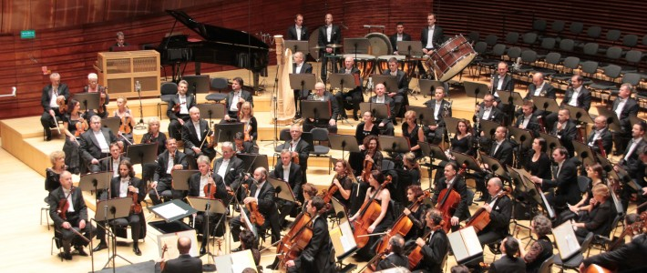

<!DOCTYPE html>
<html class="no-js"></html>
<head>
  <title>Res Musica</title>
  <meta charset="utf-8">
  <meta name="author" content="Filip Ciślak">
  <meta name="description" content="Polskie Radio Katowice">
  <meta name="viewport" content="width=device-width, initial-scale=1.0">
  <link href="../assets/css/style.css" rel="stylesheet" type="text/css">
  <link href="../assets/css/lightbox.min.css" rel="stylesheet" type="text/css">
  <link href="https://use.fontawesome.com/releases/v5.3.1/css/all.css" rel="stylesheet" integrity="sha384-mzrmE5qonljUremFsqc01SB46JvROS7bZs3IO2EmfFsd15uHvIt+Y8vEf7N7fWAU" crossorigin="anonymous">
  <link rel="apple-touch-icon" sizes="180x180" href="../apple-touch-icon.png">
  <link rel="icon" type="image/png" sizes="32x32" href="../favicon-32x32.png">
  <link rel="icon" type="image/png" sizes="16x16" href="../favicon-16x16.png">
  <link rel="manifest" href="../site.webmanifest">
  <link rel="mask-icon" href="../safari-pinned-tab.svg" color="#dd0909">
  <meta name="msapplication-TileColor" content="#b91d47">
  <meta name="theme-color" content="#ffffff">
  <script type="text/javascript" src="../assets/js/jQuery.min.js"></script>
  <script type="text/javascript" src="../assets/js/lodash.min.js"></script>
  <script type="text/javascript" src="../assets/js/modernizr.js"></script>
  <script type="text/javascript" src="../assets/js/bulma-carousel.min.js"></script>
</head>
<body>
  <div class="hero" id="top-add">
    <div class="container">
      <!-- zamienic na container dla reklamy-->
      <div class="advertisement-placeholder">
        <p>reklama</p>
      </div>
    </div>
  </div>
  <header>
    <nav class="navbar" id="main-nav" role="navigation" aria-label="main-navigation">
      <div class="container">
        <div class="navbar-brand"><a class="navbar-item" href="../index.html"></a>
          <div class="navbar-burger" data-target="#main-menu" aria-label="menu" aria-expanded="false" role="button"><span aria-hidden="true"></span><span aria-hidden="true"></span><span aria-hidden="true"></span></div>
        </div>
        <div class="navbar-menu" id="main-menu">
          <div class="navbar-end">
            <div class="navbar-item has-dropdown is-hoverable"><a class="navbar-link">Radio</a>
              <div class="navbar-dropdown">
                <div class="navbar-item"> <a href="../radio/audycje.html">Audycje</a></div>
                <hr class="dropdown-divider">
                <div class="navbar-item"> <a href="../radio/informacje.html">Informacje</a></div>
                <hr class="dropdown-divider">
                <div class="navbar-item"> <a href="../radio/pogoda.html">Pogoda</a></div>
                <hr class="dropdown-divider">
                <div class="navbar-item"> <a href="../radio/autoradio.html">Auto radio</a></div>
                <hr class="dropdown-divider">
                <div class="navbar-item"> <a href="../radio/wywiady.html">Wywiady</a></div>
                <hr class="dropdown-divider">
                <div class="navbar-item"> <a href="../radio/porady.html">Porady</a></div>
              </div>
            </div>
            <div class="navbar-item has-dropdown is-hoverable"><a class="navbar-link">Muzyka</a>
              <div class="navbar-dropdown">
                <div class="navbar-item"> <a href="../muzyka/playlista.html">Playlista</a></div>
                <hr class="dropdown-divider">
                <div class="navbar-item"> <a href="../muzyka/lista-przebojow.html">Lista przebojów</a></div>
              </div>
            </div>
            <div class="navbar-item has-dropdown is-hoverable"><a class="navbar-link">Informacje</a>
              <div class="navbar-dropdown">
                <div class="navbar-item"> <a href="../informacje/aktualnosci.html">Aktualności</a></div>
                <hr class="dropdown-divider">
                <div class="navbar-item"> <a href="../informacje/region.html">Region</a></div>
                <hr class="dropdown-divider">
                <div class="navbar-item"> <a href="../informacje/sport.html">Sport</a></div>
                <hr class="dropdown-divider">
                <div class="navbar-item"> <a href="../informacje/biznes.html">Biznes</a></div>
                <hr class="dropdown-divider">
                <div class="navbar-item"> <a href="../informacje/kultura.html">Kultura</a></div>
                <hr class="dropdown-divider">
                <div class="navbar-item"> <a href="../informacje/zdrowie.html">Zdrowie</a></div>
                <hr class="dropdown-divider">
                <div class="navbar-item"> <a href="../informacje/styl-zycia.html">Styl życia</a></div>
              </div>
            </div>
            <div class="navbar-item has-dropdown is-hoverable"><a class="navbar-link">Reklama</a>
              <div class="navbar-dropdown">
                <div class="navbar-item"> <a href="../reklama/agencja-reklamy.html">Agencja reklamy</a></div>
                <hr class="dropdown-divider">
                <div class="navbar-item"> <a href="../reklama/promocja.html">Promocja i marketing</a></div>
              </div>
            </div>
            <div class="navbar-item has-dropdown is-hoverable"><a class="navbar-link">O nas</a>
              <div class="navbar-dropdown">
                <div class="navbar-item"> <a href="../o-nas/kontakt.html">Kontakt</a></div>
                <hr class="dropdown-divider">
                <div class="navbar-item"> <a href="../o-nas/ludzie-radia.html">Ludzie</a></div>
                <hr class="dropdown-divider">
                <div class="navbar-item"> <a href="../o-nas/radio.html">O radiu</a></div>
              </div>
            </div>
            <div class="navbar-item has-dropdown is-hoverable"><a class="navbar-link">Więcej</a>
              <div class="navbar-dropdown">
                <div class="navbar-item"> <a href="../wiecej/polecamy.html">Polecamy</a></div>
                <hr class="dropdown-divider">
                <div class="navbar-item"> <a href="../wiecej/patronaty.html">Patronaty</a></div>
                <hr class="dropdown-divider">
                <div class="navbar-item"> <a href="../wiecej/wydarzenia.html">Radiowe wydarzenia</a></div>
                <hr class="dropdown-divider">
                <div class="navbar-item"> <a href="#">Więcej</a></div>
              </div>
            </div>
            <div class="level">
              <div class="level-left">
                <div class="navbar-item field">
                  <p class="control has-icons-left">
                    <input class="input" type="text" placeholder="Szukaj"><span class="icon is-left"><i class="is-medium fas fa-search"></i></span>
                  </p>
                </div>
              </div>
              <div class="level-right">
                <div class="navbar-item">
                  <div class="social-media-icons">
                    <div class="social-icon"></div>
                    <div class="social-icon"></div>
                    <div class="social-icon"></div>
                    <div class="social-icon"></div>
                  </div>
                </div>
              </div>
            </div>
          </div>
        </div>
      </div>
      <div class="navbar-after-divider"></div>
    </nav>
  </header>
  <div class="on-air-top-bar">
    <div class="container">
      <div class="columns is-vcentered">
        <div class="column">
          <h2 class="on-air-top-info">Teraz na antenie:</h2>
        </div>
        <div class="column">
          <h3 class="on-air-top-name">Varius Manx, Kasia Stankiewicz <span class="on-air-top-title">KOT BEZ OGONA</span></h3>
        </div>
        <div class="column"><a class="button is-primary is-outlined" id="top-bar-call-to-action" aria-label="Play" href="player.html"><span class="button-span-text">posłuchaj na żywo</span></a></div>
      </div>
    </div>
  </div>
  <main class="main-content">
    <div class="container">
      <div class="columns is-desktop">
        <div class="column is-9-desktop">
          <div class="columns is-centered">
            <div class="column is-10 is-9-fullhd">
              <article class="main-article">
                <div class="article-meta"><span class="article-category">AUDYCJE</span>
                </div>
                <h1 class="article-title">Res Musica</h1>
                <p class="lead">Res Musica to magazyn wydarzeń muzycznych. Audycja na antenie Polskiego Radia Katowice emitowana jest nieprzerwanie od września 1981 roku.</p>
                <figure class="image"></figure>
                <p>Res Musica to magazyn wydarzeń muzycznych. Audycja na antenie Polskiego Radia Katowice emitowana jest nieprzerwanie od września 1981 roku.</p>
                <p>W programie znajdują się omówienia, relacje i recenzje najważniejszych w koncertów i festiwali organizowanych w śląskich świątyniach i salach koncertowych, w których udział biorą wiodące orkiestry symfoniczne, soliści, chóry i zespoły kameralne reprezentujące artystyczny nurt funkcjonowania muzyki na Śląsku.</p>
                <p>Wiodącym celem prezentacji ukazujących się w tej audycji jest szeroka popularyzacja działalności tych formacji na czele z Narodową Orkiestrą Symfoniczną Polskiego Radia i Telewizji w Katowicach oraz artystami skupionymi wokół katowickiej Akademii Muzycznej im. Karola Szymanowskiego.</p>
                <p>Poprzez to słuchacz otrzymuje szeroki przegląd wydarzeń muzycznych, których organizatorami są te ważne instytucje, śląskie samorządy, a także różnego typu ośrodki kultury działające w całym regionie. Poprzez tak ukształtowaną tematykę magazynu Res Musica staramy się też uwrażliwiać naszych słuchaczy na najpiękniejsze pozycje repertuarowe w ich wykonaniu, dzieła wielkich kompozytorów, mistrzów swego gatunku od wieków dawnych po współczesność – pojawiające się w programach koncertów omawianych i relacjonowanych w magazynie Res Musica.</p>
                <p>Niedziela, godz. 20.05</p>
                <footer class="article-footer">
                  <p>Kontakt: <a href="mailto:cierpiol@radio.katowice.pl">cierpiol@radio.katowice.pl</a></p>
                  <h3 class="article-subtitle has-border">Prowadzi:</h3>
                  <li class="media">
                    <figure class="media-left image is-128x128"> </figure>
                    <div class="media-content">
                      <div class="content">
                        <p><strong>Henryk Cierpioł</strong></p>
                        <p>dziennikarz</p>
                      </div>
                    </div>
                  </li>
                </footer>
              </article>
              <article class="main-article">
                <div class="article-meta">
                  <div class="article-tags"><span class="article-tag is-medium">Region</span><span class="article-tag is-medium">Kultura</span></div><span class="article-date">15.07.2018</span>
                </div>
                <h1 class="article-title">Res Musica</h1>
                <p> W magazynie wydarzeń muzycznych Res Musica  przedstawimy Państwu między innymi rozmowy o  rozpoczynającym się w piątek 12 maja najważniejszym festiwalu muzycznym organizowanym na Śląsku – III  Festiwalu  Kultura Natura , rozmawiać będziemy ze współautorem jego programu i zawartości  treściowej prof. Marcinem Trzęsiokiem z Katowickiej Akademii Muzycznej.  </p>
                <p>O  20-leciu  artystycznej działalności  Orkiestry Muzyki Nowej opowie jej szef artystyczny Szymon Bywalec. Nie zabraknie  spotkania z laureatem jednej z nagród, tegorocznych Fryderyków - prof. Markiem Toporowskim, tym razem  w kategorii muzyka dawna. Artysta  ten jest związany  z katowicką Akademią Muzyczną prowadząc klasę organów  i  klawesynu.  Nie zabraknie też refleksji  o śląskich muzeach w tym szczególnym wymiarze  tworzenia  ekspozycji  obejmującej historię śląskiej  muzyki, - muzyki w Katowicach  w szczególności - a noc muzeów  już niedługo.</p>
                <footer class="article-footer">
                  <div class="level">
                    <div class="level-left social-media-icons">
                      <div class="addthis_inline_share_toolbox"></div>
                    </div>
                    <div class="level-right">
                      <p class="article-author">Autor:         </p>
                    </div>
                  </div>
                </footer>
              </article>
            </div>
          </div>
        </div>
        <div class="column is-3-desktop">
          <aside class="sidebar">
            <div class="sidebar-content">
              <div class="sidebar-box">
                <h3 class="sidebar-headline">Archiwum Audycji</h3>
                <div class="sidebar-box-body">
                  <ul class="sidebar-box-list">
                    <li class="sidebar-box-item"><span><small class="sidebar-date">21-06-2018 </small></span><a class="sidebar-link"><span>Spotkania Medyczne im. Krystyny Bochenek. Menopauza i andropauza</span><span class="icon is-small"><i class="fas fa-arrow-right"></i></span></a></li>
                    <li class="sidebar-box-item"> <span><small class="sidebar-date">15-04-2018 </small></span><a class="sidebar-link"><span>Nagroda dla naszej redakcyjnej koleżanki Ewy Niewiadomskiej! </span><span class="icon is-small"><i class="fas fa-arrow-right"></i></span></a></li>
                    <li class="sidebar-box-item"> <span><small class="sidebar-date">11-02-2018 </small></span><a class="sidebar-link"> <span>Malarstwo Ewy Błaszak</span><span class="icon is-small"><i class="fas fa-arrow-right"></i></span></a></li>
                    <li class="sidebar-box-item"> <span><small class="sidebar-date">22-01-2018 </small></span><a class="sidebar-link"> <span>Velostrada otwarta! Pierwsza w Polsce autostrada dla rowerow</span><span class="icon is-small"><i class="fas fa-arrow-right"></i></span></a></li>
                  </ul>
                  <nav class="pagination is-small is-centered">
                    <ul class="pagination-list">
                      <li> <a class="pagination-link is-current">1</a></li>
                      <li> <a class="pagination-link">2</a></li>
                      <li> <a class="pagination-link">3</a></li>
                      <li> <span class="pagination-ellipsis">&hellip;</span></li>
                      <li> <a class="pagination-link">20</a></li>
                    </ul>
                  </nav>
                </div>
              </div>
              <div class="newsletter-box">
                <h1 class="section-title-secondary">Zapisz się do naszego newslettera</h1>
                <div class="field">
                  <div class="control">
                    <input class="input is-medium" placeholder="e-mail" type="e-mail">
                  </div>
                  <div class="control">
                    <input class="input" type="submit">
                  </div><span><small>*Tu powinna się znalezc klauzula RODO</small> </span>
                </div>
              </div>
            </div>
          </aside>
        </div>
      </div>
    </div>
  </main>
  <section class="similiar-articles">
    <div class="container">
      <h2 class="section-title">Aktualności</h2>
      <div class="columns">
        <div class="column">
          <article class="featured">
            <div class="similiar-article-wrapper"><span class="tag date-tag is-medium">17.07.2018</span><a class="featured-img-anchor" href="../articles/miasteczko.html"></a>
              <div class="article-tags"><span class="article-tag is-medium">Region</span><span class="article-tag is-medium">Katowice</span><span class="article-tag is-medium">Kultura</span>
              </div><a href="../articles/miasteczko.html">
                <h3 class="featured-article-title">Miasteczko na szczyt klimatyczny</h3></a>
              <p>Excepteur sint occaecat cupidatat non proident, sunt in culpa qui officia.</p>
            </div>
          </article>
        </div>
        <div class="column">
          <article class="featured">
            <div class="similiar-article-wrapper"><span class="tag date-tag is-medium">15.07.2018</span><a class="featured-img-anchor" href="../articles/pszczyna-raciborz.html"></a>
              <div class="article-tags"><span class="article-tag is-medium">region</span><span class="article-tag is-medium">Pszczyna</span><span class="article-tag is-medium">Racibórz</span>
              </div><a href="../articles/pszczyna-raciborz.html">
                <h3 class="featured-article-title">Trwa budowa drogi Pszczyna – Racibórz.</h3></a>
              <p>Excepteur sint occaecat cupidatat non proident, sunt in culpa qui officia.</p>
            </div>
          </article>
        </div>
        <div class="column">
          <article class="featured">
            <div class="similiar-article-wrapper"><span class="tag date-tag is-medium">13.07.2018</span><a class="featured-img-anchor" href="../articles/naukobus.html"></a>
              <div class="article-tags"><span class="article-tag is-medium">kultura</span><span class="article-tag is-medium">Katowice</span>
              </div><a href="../articles/naukobus.html">
                <h3 class="featured-article-title">Naukobus. Mobilne centrum Nauki.</h3></a>
              <p>Excepteur sint occaecat cupidatat non proident, sunt in culpa qui officia.</p>
            </div>
          </article>
        </div>
        <div class="column">
          <article class="featured">
            <div class="similiar-article-wrapper"><span class="tag date-tag is-medium">12.07.2018</span><a class="featured-img-anchor" href="../articles/fetor.html"></a>
              <div class="article-tags"><span class="article-tag is-medium">region</span><span class="article-tag is-medium">Jaworzno</span>
              </div><a href="../articles/fetor.html">
                <h3 class="featured-article-title">Prezydent Silbert: nie ma odpowiednich przepisów do walki z fetorem.</h3></a>
              <p>Excepteur sint occaecat cupidatat non proident, sunt in culpa qui officia.</p>
            </div>
          </article>
        </div>
      </div>
    </div>
  </section><a class="c-go-top" href="#" id="c-go-top"><i class="fa fa-arrow-up fa-fw"></i></a>
  <footer id="main-footer">
    <div class="container">
      <div class="columns">
        <div class="column is-3">
          <section>
            <h4 class="footer_headline">Partnerzy radia katowice</h4>
            <ul>
              <li><a>Górnośląskie Towarzystwo Literackie</a></li>
              <li><a>Wydawnictwo Górnicze</a></li>
              <li><a>Portal Górniczy</a></li>
              <li><a>Głos Ziemi Cieszyńskiej</a></li>
              <li><a>Kronika Beskidzka</a></li>
              <li><a>Regionalny Portal Informacyjny</a></li>
              <li><a>Paskud</a></li>
            </ul>
          </section>
        </div>
        <div class="column is-3">
          <section>
            <h4 class="footer_headline">archiwum dźwiękowe</h4>
            <ul>
              <li><a>Debata Samorządowa Radia Katowice</a></li>
              <li><a>Wybuch w Bielsku. Jazda autostradą</a></li>
              <li><a>U progu dnia – ks. Stanisław KOŁAKOWSK</a></li>
              <li><a>Wypożyczanie samochodu za granicą</a></li>
              <li><a>Wizyta ministra kultury. Umowa</a></li>
            </ul>
          </section>
        </div>
        <div class="column is-2">
          <section>
            <h4 class="footer_headline">częstotliwości</h4>
            <ul>
              <li><a>89.3 FM – Gliwice</a></li>
              <li><a>97.0 FM – Racibórz</a></li>
              <li><a>98.4 FM – Częstochowa</a></li>
              <li><a>101.2 FM – Katowice</a></li>
              <li><a>102.2 FM – Katowice</a></li>
              <li><a>103.0 FM – Bielsko-Biała</a></li>
              <li><a>216,928 MHz DAB+ </a></li>
            </ul>
          </section>
        </div>
        <div class="column is-2">
          <section>
            <h4 class="footer_headline">kontakt</h4>
            <p>
                Polskie Radio <br/>
               Regionalna Rozgłośnia w Katowicach <br/>
               Radio Katowice SA <br/>
            </p>
            <p>
                ul. Ligonia 29, 40-953 Katowice <br/>
               tel. +48 32 2005 400, fax +48 32 2005 581 <br/>
               e-mail: sekretariat@radio.katowice.p <br/>
            </p>
          </section>
        </div>
        <div class="column is-2">
          <section>
            <h4 class="footer_headline">media społecznościowe</h4>
            <ul>
              <li><a>Facebook</a></li>
              <li><a>YouTube</a></li>
              <li><a>twitter</a></li>
              <li><a>instagram</a></li>
            </ul>
          </section>
        </div>
      </div>
    </div>
  </footer>
  <script type="text/javascript" src="../assets/js/lightbox.min.js"></script>
  <script type="text/javascript" src="../assets/js/index.js"></script>
  <script type="text/javascript" src="//s7.addthis.com/js/300/addthis_widget.js#pubid=ra-5bcedd59c7d4b6f7"></script>
</body>